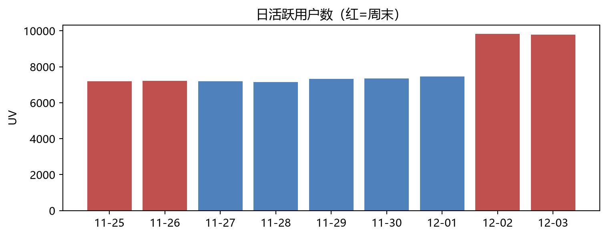

| 处理 | 结果 | |
|---|---|---|
| 0 | 用户级抽样（seed=42，单线程） | 1,021,043 行 |
| 1 | 时间窗清洗 | 剔除 566 行（0.06%） |
| 2 | 清洗后样本 | 1,020,477 行 / 10,000 用户 |
电商用户行为指标树与转化漏斗分析（案例一）
电商用户行为指标树与转化漏斗分析
案例一 · 数据集：阿里天池 UserBehavior（2017-11-25 ~ 12-03，约 100 万用户 1 亿条行为） 分析口径：用户级确定性抽样 10,000 人（seed=42，单线程采样，保留其全部 1,021,043 条行为），剔除时间窗外脏数据后保留 1,020,477 行 目的：练习”数据 → 指标 → 漏斗 → 分层 → 建议”的完整产品分析链路；所有指标口径见
pmforge_analysis.metrics.METRICS注册表
一、数据质量：先抓虫，再算数
首次跑通后暴露三个数据问题，处理过程本身就是本案例的一部分：
- 脏时间戳：原始数据存在时间戳落在窗口外的行（抽样中发现最远打到 2030 年）。清洗规则：仅保留官方窗口 2017-11-25 00:00 ~ 2017-12-03 24:00（上海时区），剔除 566 行（0.06%），清洗后时间范围精确落在窗口内。
- 抽样方式取舍：最初按”行级”抽 10 万行，结果 10 万行摊到 9.2 万用户、人均仅 1 条记录——用户级指标（漏斗 UV、复购率）被严重稀释。改为用户级抽样：抽 1 万用户、保留其全部行为（约 102 万行）。
- 采样可复现性：duckdb 的 reservoir 采样在并行扫描下同 seed 两次结果会漂移（实测 100.9 万 vs 101.7 万行），采样改为强制单线程后同 seed 完全一致（1,021,043 行）——报告数字因此可复现。
二、指标总览
| 数值（2017-11-25 ~ 12-03） | |
|---|---|
| PV | 915,091 |
| UV | 10,000 |
| 人均浏览量 | 91.5 次/9天 |
| 加购率（用户） | 75.2% |
| 收藏率（用户） | 39.6% |
| 购买率（用户） | 67.9% |
三、转化漏斗（宽松口径）
口径说明：本漏斗为宽松漏斗——窗口内”发生过该层行为”即计入该层（不校验行为先后顺序）。严格有序漏斗列为后续迭代项。
| stage | behaviors | users | conv_rate | step_rate | |
|---|---|---|---|---|---|
| 0 | 0 | pv | 9969 | 100.0% | 100.0% |
| 1 | 1 | cart+fav | 8736 | 87.6% | 87.6% |
| 2 | 2 | buy | 6788 | 68.1% | 77.7% |
解读：87.6% 的浏览用户在 9 天内产生了加购或收藏——加购收藏是绝对主流的中间行为；进入中间层的人 77.7% 最终购买，决策链路短。第 1→2 层流失 12.4%，是漏斗上最大的单点流失。
四、RFM 用户分层（仅覆盖购买用户）
口径说明：分层对象为窗口内有购买行为的 6,788 用户（无购买用户不构成 R/F/M 语境）；M 为代理口径（= 购买频次，数据集无金额字段）；打分为 R/F 中位数二分。
| 用户数 | 占购买用户 | |
|---|---|---|
| segment | ||
| 一般挽留客户 | 2568 | 37.8% |
| 重要价值客户 | 1661 | 24.5% |
| 重要发展客户 | 1387 | 20.4% |
| 重要保持客户 | 1172 | 17.3% |
购买用户中 24.5% 落在”重要价值”（R 近 F 高），是复购与客单深耕的第一目标人群；“一般挽留”占 37.8%，是唤醒试验的对象。
五、日活尾段跳升：现象与归因警示

DAU 在 12-02、12-03 跳升至 9,829 / 9,781，较前五日均值（7,298）高出 34.4%。但这两个跳升日恰逢周末（红色）与窗口尾部重合——而窗口开头的周末（11-25/26，同样是红色）DAU 只有 7,195/7,217，与工作日无异。两个”周末”表现截然不同，说明“周末效应”与”窗口尾部效应”混杂，仅凭 9 天窗口无法归因。这正是不该拿单一窗口数据直接下运营决策的典型案例。
六、结论与产品建议
| # | 结论 | 数据依据 | 产品建议 |
|---|---|---|---|
| 1 | 加购意愿约为收藏的 1.9 倍，加购是主转化锚点 | 加购率 75.2% vs 收藏率 39.6%（用户口径） | 再营销体系以”加购”为主信号，收藏为辅 |
| 2 | 加购未购是最大的可运营流失人群 | 加购 7,432 人中 2,103 人（28.0%）最终未购买 | 对加购未购用户做定向催付（限时券/降价提醒） |
| 3 | 尾段 DAU 跳升 +34.4%，但归因混杂 | 12-02/03 跳升与周末、窗口尾部双重重合；开头周末无跳升 | 先归因再决策：延长数据窗验证是周末效应还是月初/活动效应，再定投放排期 |
| 4 | 进入中间层后转化率高，决策链路短 | 逐层转化 77.7%（加购/收藏 → 购买） | 优化重点在”浏览 → 加购”（第 1→2 层流失 12.4%）而非付款环节 |
交叉人群验证（结论 2 的人群规模）：
| 人数 | |
|---|---|
| 加购未购 | 2103 |
| 收藏未购 | 1143 |
| 加购且收藏 | 2745 |
| 浏览后零深动作 | 611 |
七、局限与后续迭代
- 宽松漏斗：未校验行为先后顺序，严格有序漏斗（pv 先于 cart/buy）是迭代项；
- M 代理口径：数据集无金额，M 以购买频次代理，涉及客单价的结论不可下；
- 抽样占比 1%：1 万/约 99 万用户，seed 固定可复现，但绝对量级结论（如 DAU）不可外推全站；
- 复购率口径：66.0% 为”窗口内 ≥2 次购买行为”，未按订单去重，严谨复购需订单级数据；
- 单窗口归因局限：见第五节，日活尾段跳升需要更长窗口的数据才能归因。